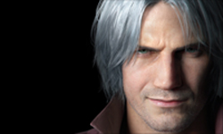
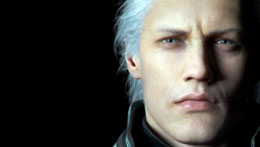
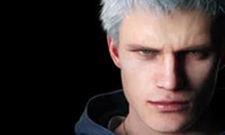
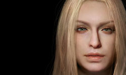
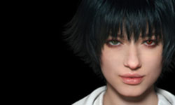
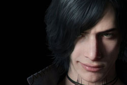

INICIO.
PERSONAJES.
HISTORIA.
ARMAS.
ENEMIGOS.
OBJETOS.
GALERIA.
DEVIL MAY CRY.
CONTACTENOS
PERSONAJES:
Dentro de esta saga contamos con muchos personajes, entre ellos estan los pricipales que son:
- Dante: Dante es el principal protagonista de la saga Devil May Cry. Nacido de la unión humana llamada Eva y del guerrero Legendario Caballero Oscuro 'Sparda', Dante es un híbrido (semi-demonio) el cual ha dedicado gran parte de su vida a eliminar demonios y demás criaturas infernales que han hecho su aparición en el mundo de los humanos, a través de su propia agencia de caza-recompensas de fenómenos paranormales llamada Devil Never Cry, más adelante renombrada como 'Devil May Cry.
Dante tiene un hermano gemelo llamado Vergil, el cual a pesar de ser su gemelo son totalmente opuestos. Dante y Vergil tendrán más de un enfrentamiento a lo largo de su historia, en la cual finalmente sólo uno quedaría en pie. En el final Dante mostraría afecto a su hermano llorando con leves lágrimas su pérdida. Dante posee dos espadas que son dejadas por su padre a él, Rebellion, una misteriosa espada y a su hermano Vergil, otra espada mágica misteriosa llamada Yamato, Rebellion que mostraría su verdadera forma una vez despierta completamente la sangre demoníaca de Dante y la Force Edge, la espada del legendario Sparda.
Posee auto regeneración, ya que demostró curarse sus heridas sin esfuerzo y sin necesidad de activar el Devil Trigger; esto se puede apreciar cuando es atacado por Cerberus en la escena inicial de la misión 1 para el videojuego Devil May Cry 3: Dante's Awakening.

- Vergil: Vergil es el mayor de los hijos gemelos de Sparda y Eva. Es el principal antagonista de Devil May Cry 3: Dante's Awakening. Después que su madre falleciera, tanto él como Dante tomaron diferentes caminos. A diferencia de su hermano, Vergil abandonó su humanidad y aceptó su herencia demoníaca, comenzando así una búsqueda del poder de su padre.
Tras ser derrotado por Dante, cae a las profundidades del Inframundo y se encuentra con Mundus, teniendo un combate en el cual es derrotado y termina siendo manipulado por el Príncipe de la Oscuridad bajo nombre de Nelo Angelo.
Años más tarde, después que Dante derrotara a Nelo Angelo, Vergil sobrevive y ahora está libre del control de Mundus, sin embargo, está debilitado. Reaparece como alguien encapuchado para recuperar Yamato, quitando el Devil Bringer a su hijo, ahora bajo una apariencia demoníaca y con su seudónimo Urizen es revelado como el antagonista principal de Devil May Cry 5.

- Nero: Nero es el protagonista de la cuarta entrega de la saga, junto con Dante. En Nero se pueden observar dos esencias distintas: la mayoría de su cuerpo es humano, pero su brazo derecho conserva forma de garra. Se entiende a través de la metamorfosis que sufre Nero al enfrentarse a Agnus, que su brazo encierra (o podría encerrar) el espíritu del derrotado Nelo Angelo, o sea, la esencia de Vergil. ya que es el hijo.
Al principio, Nero cree que Dante es un asesino despiadado, pero después descubre que sus amigos y la orden para la que cumplía ciertos "trabajos especiales" eran realmente una secta que experimenta con demonios para conseguir su poder y eliminar el resto de demonios y lo deseaban traicionar; ambos terminando como aliados.
Nero tiene poderes similares a los de Dante y puede utilizar su Devil Bringer, que puede agarrar objetos y enemigos lejanos, así como realizar grandes hazañas de la fuerza. Cuando se utiliza una versión incorpórea del Devil Bringer parece que varía en tamaño, dependiendo de la cantidad de atención y la energía que pone en ella, e imita movimientos de la mano de Nero. También se puede absorber los objetos y armas demoníacas, la concesión de las habilidades Devil Bringer nuevo y parece haber una conexión con Yamato.

- Trish: Es una creacion de Mundus que se asemeja a la madre de los hijos de Sparda para lograrlo manipular a Dante
Como marioneta de Mundus, Trish fue originalmente cruel e indiferente, pero después de que Dante la salvó, comenzó a desarrollar emociones y compasión hacia él, y finalmente se sacrificó para salvarlo de un ataque mortal. Después de ser revivida, Trish se unió a Dante en su tienda Devil May Cry, y mostró entusiasmo por ser su compañera.

- Lady:Es la hija de Arkham que fue traumatizada con los demonios, porque su padre se volvio uno de ellos y mato a su madre.
Su padre, Arkham, sacrificó a la madre de Lady, para volverse un demonio y completar sus estudios de las artes oscuras y del inframundo. Lady odia a su padre por esto y desea vengar a su madre sin importar que pase.
Su verdadero nombre es Mary pero lo rechaza pues le fue dado por su padre y se lo cambia por Lady, que es como le llama Dante a lo largo del videojuego. En Devil May Cry 3 mata a Arkham. Su arma preferida y la más potente es Kalina Ann, una bazooka con varias funciones y con el nombre de su madre grabado.

- V: V es uno de los protagonistas principales y el tercer personaje jugable introducido en Devil May Cry 5. Un misterioso humano con la capacidad de conjurar seres demoníacos bajo su control. V se presenta ante Dante con la tarea de detener a un nuevo rey demonio con un poder superior al del mismo Mundus. Más tarde se revelaría que V es, en realidad, la mitad humana de Vergil.
Luego de que Vergil se separase en dos dando origen a V,este se sorprende y atemoriza ante la presencia de Urizen, tratando de escapar pero su frágil cuerpo no le permitía ponerse de pie,entonces al ver que no tiene suficiente energía demoníaca,comienza a arrastrarse desesperadamente buscando escapatoria pero se desploma al agarrar su libro mientras se desespera para no morir. Griffon lo salva a ultimo momento,lanzándose por un ventanal aterrizando violentamente sobre una pila de basura. Griffon se dirige a V de forma sarcástica y explica que ambos iban a morir a menos de que hicieran un "contrato" ya que ambos eran los traumas de Vergil en su etapa de Nelo Angelo que lograron manifestarse físicamente mediante Yamato y que sin un anfitrión del mismo origen al suyo,desaparecerían.
